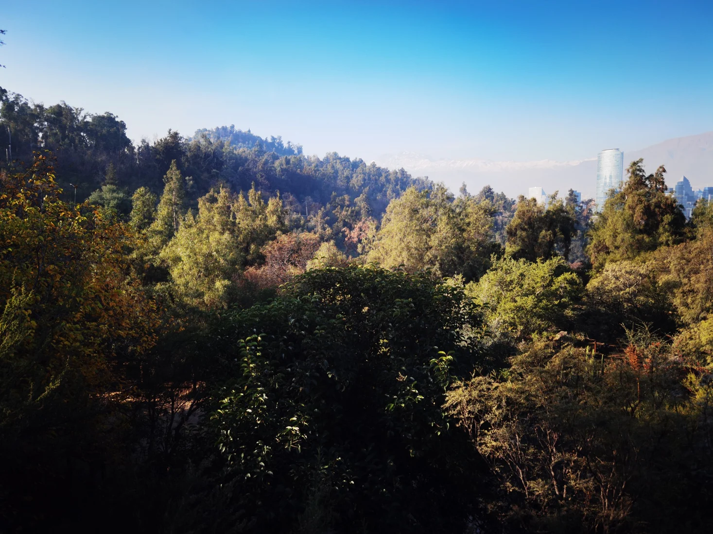

EL OFICIO EMPIEZA CON UNA PREGUNTA.
Mirar de cerca.
Contar lo que
importa.
Soy Luciano Salazar Osorio. Estudio Periodismo y escribo sobre política y ciencia en RDN Chile. Aquí reúno investigaciones, historias en terreno y trabajos con datos.
INVESTIGACIÓNBAJO LA LUPAAUDIOVISUALPERIODISMO DE DATOS

ÍNDICE DE TRABAJOS
El archivo abierto.
Cargando archivo…
SOBRE MÍ / EL AUTOR
Periodista
en formación.
Luciano Salazar Osorio. Estudiante de cuarto año de Periodismo en la Universidad Autónoma de Chile. Me interesan la actualidad nacional, la investigación, la ciencia y las nuevas narrativas periodísticas.
Desde julio de 2025 escribo sobre política y ciencia en RDN Chile y desarrollo reportajes para Bajo la Lupa. También soy Tutor Guía en la universidad. Me interesa el cruce entre una conversación, un dato y una historia que necesita ser contada.
Consultar currículum completo · PDF ↗CONTACTO PROFESIONAL